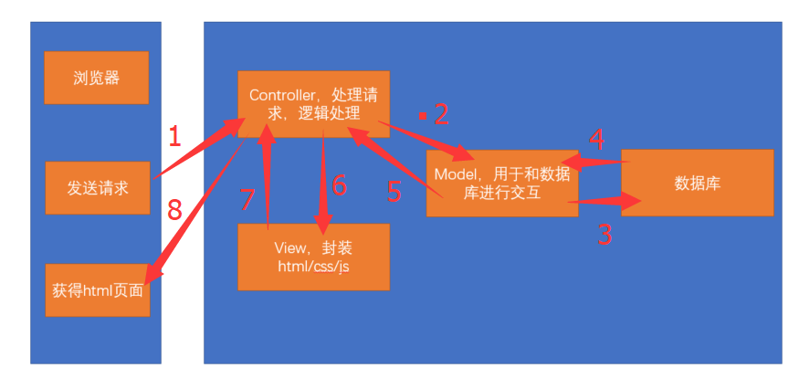
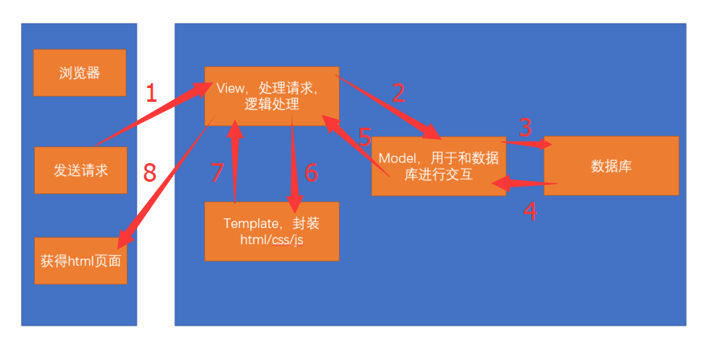

Django介绍：
Django，发音为[`dʒæŋɡəʊ]，Django诞生于2003年秋天，2005年发布正式版本，由Simon和Andrian开发。当时两位作者的老板和记者要他们几天甚至几个小时之内增加新的功能。两人不得已开发了Django这套框架以实现快速开发目的，因此Django生来就是为了节省开发者时间的。Django发展至今，被许许多多国内外的开发者使用，已经成为web开发者的首选框架。因此，如果你是用python来做网站，没有理由不学好Django。
选读：
Django版本和Python版本：

web服务器和应用服务器以及web应用框架：
- web服务器：负责处理http请求，响应静态文件，常见的有
Apache，Nginx以及微软的IIS. - 应用服务器：负责处理逻辑的服务器。比如
php、python的代码，是不能直接通过nginx这种web服务器来处理的，只能通过应用服务器来处理，常见的应用服务器有uwsgi、tomcat等。 - web应用框架：一般使用某种语言，封装了常用的
web功能的框架就是web应用框架，flask、Django以及Java中的SSH(Structs2+Spring3+Hibernate3)框架都是web应用框架。
Django和MVC：
Django是一个遵循MVC设计模式的框架，MVC是Model、View、Controller的三个单词的简写。分别代表模型、视图、控制器。以下图片说明这三者之间的关系：

而Django其实也是一个MTV的设计模式。MTV是Model、Template、View三个单词的简写。分别代表模型、模版、视图。以下图片说明这三者之间的关系：

更多：
Django的官网：https://www.djangoproject.com/Django Book2.0版本的中文文档：http://djangobook.py3k.cn/2.0/chapter01/Django2.0版本的中文文档：http://python.usyiyi.cn/translate/django2/index.html